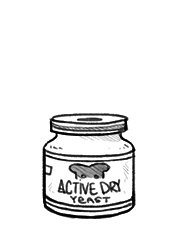

active dry yeast
Yeast, the most common being S. cerevisiae, is used as a leavening agent in baking.
Active dry yeast is sold in granulated form, it needs to be dissolved in warm water with sugar before use, unlike instant yeast which can be added right into dry ingredients. Yeast converts sugars into carbon dioxide, which in turn causes the dough to expand as the gas forms bubbles.